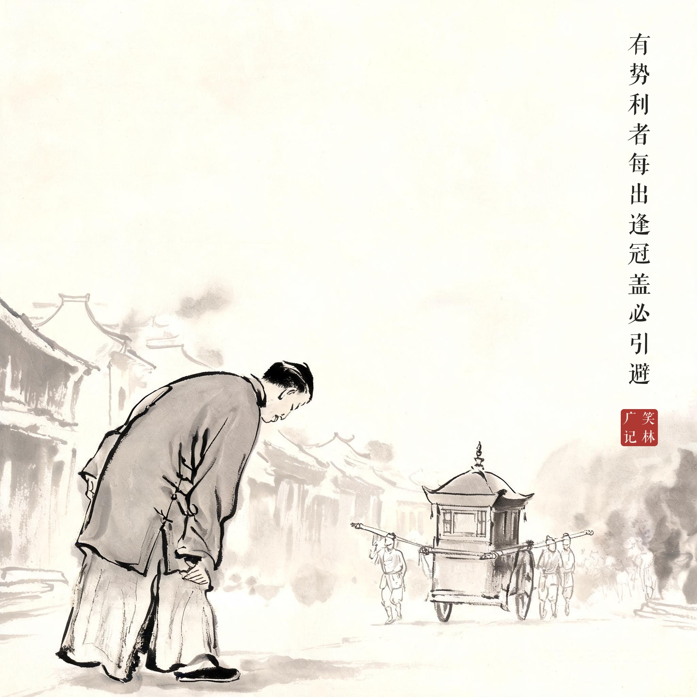
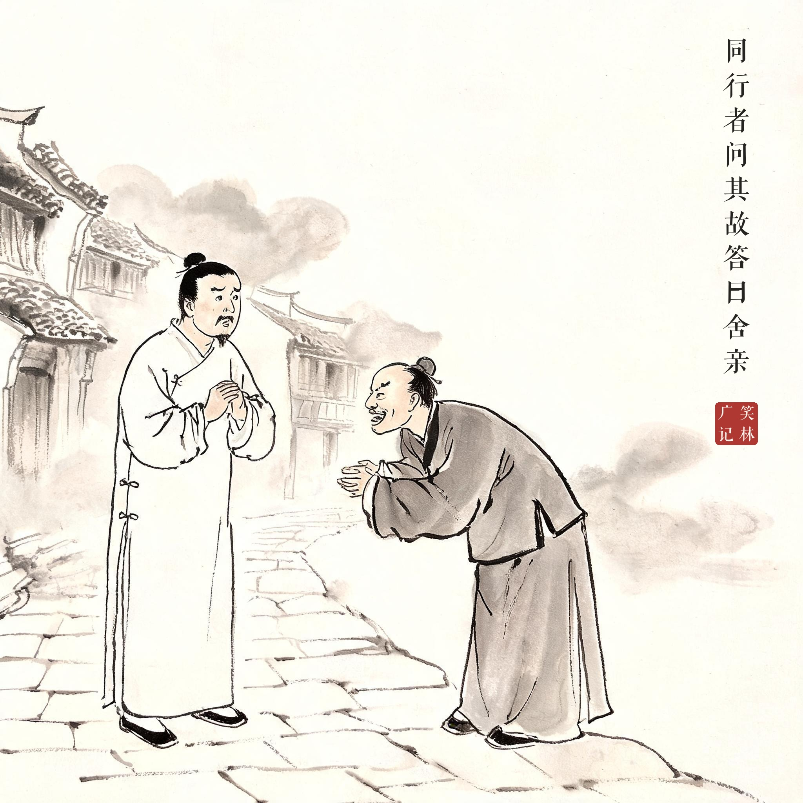
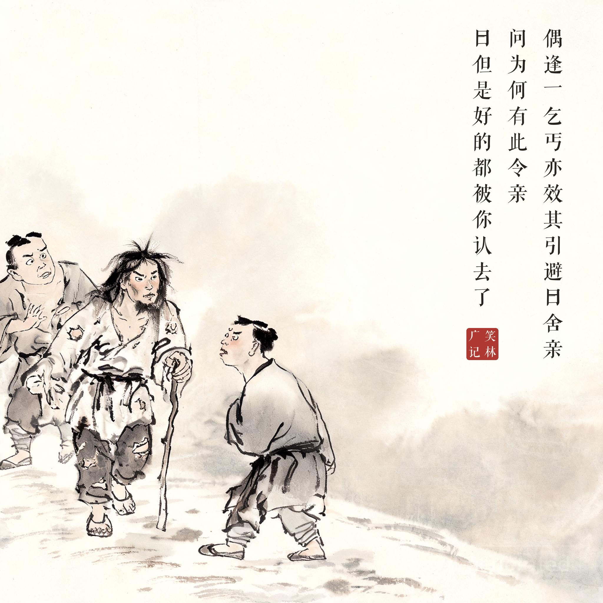

《笑林广记 · 讥刺部》（[清]游戏主人纂集）
有势利者，每出，逢冠盖，必引避。同行者问其故，答曰："舍亲。"如此屡屡，同行者厌之。偶逢一乞丐，亦效其引避，曰："舍亲。"问："为何有此令亲。"曰："但是好的，都被你认去了。"
有个势利眼，出门遇见官员仪仗就躲，说："是我亲戚。"回回如此，同行的人烦了。后来迎面来了个要饭的，同行者也闪身躲避，说："舍亲。"问："你怎么会有这样的亲戚？"答："体面点的，都被你认作亲戚了。"
体面的亲戚被势利眼抢注一空，乞丐成了仅剩的资源。讽刺的妙处是顺着对方的逻辑走到底。